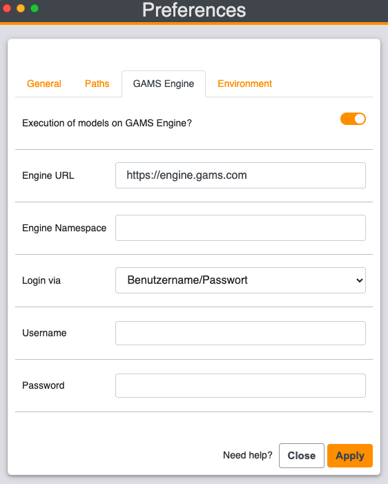
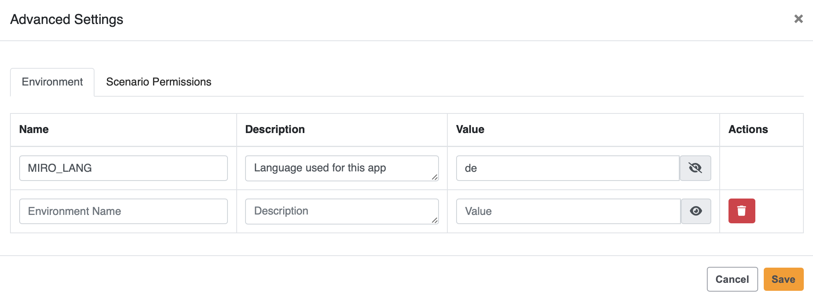

Both GAMS MIRO Desktop - boosted by GAMS Engine and GAMS MIRO Server make use of GAMS Engine, which must be purchased separately. Please contact sales@gams.com if you are interested in one of these setups.
GAMS MIRO Server
Introduction
In the most basic setup - GAMS MIRO Desktop - both the MIRO application and GAMS itself are installed on the same computer and run exclusively on this machine. But MIRO is not limited to this setup: You can run your MIRO applications locally, but solve the GAMS jobs in the cloud. We call this setup GAMS MIRO Desktop - boosted by GAMS Engine. GAMS Engine is a server software that allows you to run GAMS models on centralised compute resources. It uses state-of-the-art technology to handle the entire job management, scheduling and load balancing of your computationally intensive optimization problems. GAMS Engine is also used for GAMS MIRO Server. This setup allows you to run both the GAMS execution engine as well as the MIRO application itself in the cloud. Your optimization applications can then be accessed from any device with a modern web browser like a PC, smartphone or tablet.

Note:
GAMS MIRO Desktop - Boosted by GAMS Engine
With GAMS MIRO Desktop - Boosted by GAMS Engine, you can solve GAMS jobs in the cloud with your locally running MIRO applications. This requires a running instance of GAMS Engine (read more about the installation of GAMS Engine here). To switch from executing your optimization jobs on your local machine to solving them in the cloud open your MIRO library and go to Preferences → General. Activate the checkbox "Execution of models on GAMS Engine". This setting affects all deployed MIRO apps (started via the MIRO library) and all MIRO apps under development (started via GAMS Studio or the command line).

The next time you launch a MIRO application, a login dialog appears. To connect to GAMS Engine, the following information is required:
- Engine URL: URL where GAMS Engine is hosted, e.g. http(s)://mydomain.com/engine/api.
- Username & password: Your GAMS Engine credentials. More about the user management of GAMS Engine can be found here.
- Namespace: The namespace to solve the model in. Engine uses these namespaces to organize GAMS models. For example, each model name can only occur once within a namespace. Your user account needs at least execute permissions on the namespace to use. More about this topic can be found here.
- Is your model registered in the namespace: When a model is registered in an Engine namespace, the model files are stored on the Engine server. This avoids having to send the same model files to Engine for each job submit. Only the scenario data is communicated in this case. Read more here.
- Remember me: Your credentials will be saved so that you will not have to log in again the next time you start the application.
GAMS MIRO Server
Note:
The following installation instructions refer exclusively to the installation of GAMS MIRO Server. The corresponding installation steps have to be performed on the server used for this purpose. Please make sure that you have installed GAMS Engine before proceeding with the installation of GAMS MIRO Server.
Server Administration
Install MIRO Server
When you purchase GAMS MIRO Server, you will receive a ZIP file that contains everything you need to get started. The general installation instructions are given below. However, keep in mind that the installation is highly dependent on your setup. Since GAMS MIRO Server is a server application, the concepts of ports, SSL, certificates, etc. are omnipresent. Setting up such a system is a common task for a server administrator. If you have problems with the installation, please do not hesitate to contact us by mail at support@gams.com.
- Install Docker Desktop from https://docs.docker.com/engine/install/. Start docker afterwards. We further recommend to configure Docker to start on boot. To use the Docker CLI without sudo, you must add your user to the docker group.
- Install Docker Compose from https://docs.docker.com/compose/install/.
- Extract miro_server.zip. This will create a subfolder miro_server.
- Open a terminal and cd into that folder.
Tip:
GAMS MIRO applications will later be stored at this location.
- In case MIRO Server and GAMS Engine run on the same machine: Get the IP of the docker0 network interface via: sudo ip addr show docker0 |grep -Po 'inet \K[\d.]+'. You will need this IP in the next step.
Install MIRO Sever by running ./miro-server install. You will be asked to enter the GAMS Engine host and the namespace to be used by MIRO Server.
- If MIRO Server and GAMS Engine are running on the same machine, enter for the host: http://<IP extracted from previous step>/<engine location>/api (engine location is root/empty per default). If you specified a port when installing GAMS Engine, this port must also be specified here: http://<IP extracted from previous step>:<engine port>/<engine location>/api.
- If GAMS Engine is running on a separate machine, enter the URL here, e.g. http(s)://mydomain.com/api.
The default namespace is global. You can also specify any other namespace created in GAMS Engine. You can change the GAMS Engine connection info at any time by modifying the auto-generated .env file that is located inside the miro_server directory. The following environment variables have to be set:
Note that MIRO Server must be restarted if the .env has been changed.Environment Variable Name Environment Variable Value Example GMS_MIRO_ENGINE_HOST IP adress and port/DNS of Engine https://mydomain.com/api GMS_MIRO_ENGINE_NS Engine namespace to be used by MIRO Server miro_server You will also be asked whether you want to use MIRO Server with or without authentication service, i.e. whether users have to log in with an existing GAMS Engine account (default) or whether everyone with the valid URL should have free access to the app(s). Read more about the user management in the section Authentication and User Management.
The installation script will inform you whether the installation was successful or not.
Warning:
We strongly recommend to use MIRO Server on a Linux server in a production environment!
- Install Docker from https://docs.docker.com/engine/install/ (note the system requirements). Start docker afterwards. We further recommend to configure Docker to start on login.
- Extract miro_server.zip. This will create a subfolder miro_server.
- Open a terminal and cd into that folder.
Tip:
GAMS MIRO applications will later be stored at this location.
Install MIRO Sever by running miro-server.cmd install. You will be asked to enter the GAMS Engine host and the namespace to be used by MIRO Server.
- If MIRO Server and GAMS Engine are running on the same machine, enter for the host: http://host.docker.internal/<engine location>/api (engine location is root/empty per default). If you specified a port when installing GAMS Engine, this port must also be specified here: http://host.docker.internal:<engine port>/<engine location>/api.
- If GAMS Engine is running on a separate machine, enter the URL where it can be reached, e.g. http(s)://mydomain.com/api.
The default namespace is global. You can also specify any other namespace created in GAMS Engine. You can change the GAMS Engine connection info at any time by modifying the auto-generated .env file that is located inside the miro_server directory. The following environment variables have to be set:
Note that MIRO Server must be restarted if the .env has been changed.Environment Variable Name Environment Variable Value Example GMS_MIRO_ENGINE_HOST IP adress and port/DNS of Engine https://mydomain.com/api GMS_MIRO_ENGINE_NS Engine namespace to be used by MIRO Server miro_server You will also be asked whether you want to use MIRO Server with or without authentication service, i.e. whether users have to log in with an existing GAMS Engine account (default) or whether everyone with the valid URL should have free access to the app(s). Read more about the user management in the section Authentication and User Management.
The installation script will inform you whether the installation was successful or not.
Start / Stop / Update / Uninstall
This section assumes a Linux operating system. On Windows, ./miro-server must be replaced by miro-server.cmd in the commands, e,g, miro-server.cmd start.
StartOnce you have GAMS MIRO Server installed, you can launch it via
> ./miro-server start.
GAMS MIRO Server will now listen on port 8080. You can log in with any GAMS Engine user that has at least execute permissions on the namespace provided. To directly access a MIRO application that has been added to MIRO Server, go to /app_direct/<appId>, where appId is the lowercase name of your main gms file per default.
Stop
To stop a running instance of GAMS MIRO Server, run
> ./miro-server stop
Restart
To perform a restart (stop and start), run
> ./miro-server restart
Update
To update GAMS MIRO Server to the latest version, run
> ./miro-server update
Note that this will pull new images from the GAMS Docker registry and launch them. If you only want to pull new images, run > ./miro-server pull
Uninstall
To remove GAMS MIRO Server including all data associated with it from your server, run
> ./miro-server uninstall
Additionally, you can remove the directory where you extracted the configuration files of the GAMS MIRO Server.
Customize MIRO Server
After setting up MIRO Server, some basic configurations can be made. This includes, among other things, setting a logo for the login screen or adjusting the authentication method.
Most of the settings can be changed in the data/application.yml file in the miro_server directory. Note that you must stay with the file's YAML format. It is also important that no adjustments are made to the file other than the following settings. Changes directly affect the functionality of MIRO Server!
application.yml example
The following settings can be made in the data/application.yml file:- Title (proxy.title):
Sets the title that is visible in the browser tab. - Language (proxy.miro-lang):
With this setting you can set the global language for all deployed MIRO apps. Currently, the languages available are English ('en'), Chinese ('cn') and German ('de'). This global language setting initially applies to all apps. You can still set a different language individually for each app, which overrides the global setting. This allows to host apps in different languages. Read more about how to change the language for an individual app.
- Authentication method (proxy.authentication):
When you set up MIRO Server as a server administrator, you can choose to use the service with or without authentication. This decides whether anyone with access to the MIRO Server URL is allowed to access the MIRO apps, or whether GAMS Engine credentials are used. In the data/application.yml file you can change this setting. The following options are available:- proxy.authentication: webservice: GAMS Engine authentication
- proxy.authentication: none: No authentication
- Context-path server.servlet.context-path:
If you want to host MIRO Server on a different path than root, you must adjust the context path under server.servlet.context-path). For example, if you want to access the MIRO apps at https://mydomain.com/miroapps, then the context-path must be set to /miroapps. Beside the adjustment of the path in the application.yml file, the configuration of the reverse proxy (Nginx: location property) has to be adjusted as well.
Note that when using MIRO Server without authentication, an anonymous GAMS Engine user with at least execute permissions on the used namespace must be created. The credentials of this user must be provided in the .env file in the miro_server directory. More about this here.
- Logo:
In addition to the settings in the application.yml, the logo that is displayed in the login screen can also be customized. To change the logo, replace the logo.png and logo.svg under data/img/. Note that the maximum file size for the logo is 1 mb.
All changes will take effect after a restart of MIRO Server
Extending the MIRO Docker image
In case your MIRO applications need additional packages, you have to extend the Docker UI image. You can do so by adding the additional packages required by your custom renderers to the file additional_packages located inside the miro_server directory. Each package name must be on a new line. Once all packages are added to this file, run
> ./miro-server build
(on Windows miro-server.cmd build). Please note that additional packages may cause version conflicts with packages used internally by MIRO. We therefore recommend keeping the number of additional packages to a minimum.
Nginx example configuration
We suggest to run GAMS MIRO Server behind a reverse proxy such as nginx. You can find an example configuration in the file miro.conf located inside the miro_server directory mentioned in the installation instructions. To apply this configuration, simply copy it to the configuration location of your nginx (e.g. sudo cp miro.conf /etc/nginx/conf.d/). Note that you will have to reload nginx afterwards using sudo nginx -s reload.
Hosting GAMS Engine and MIRO Server on the same hostWhen you are hosting MIRO Engie and MIRO Server on the same host, you have to merge the nginx configurations of both GAMS Engine and MIRO Server. A resulting /etc/nginx/conf.d/miro.conf could look as follows:
Nginx example configuration
Note that even though both GAMS Engine and MIRO Server run on the same host, the GAMS Engine host is not localhost. In case TLS, port/certificate info etc. is used, this needs to be added here as well. If you need help with this, please contact us. Nginx needs to be reloaded if the configuration has been changed: sudo nginx -s reload.
If you want to host MIRO Server on a different path than root, you must adjust the context path in the file data/application.yml accordingly (entry server.servlet.context-path).
Running under SELinux
Note that with SELinux active (e.g. CentOS/RHEL), you might have to allow your nginx server to proxy to the upstream MIRO Server host. You can do so by running: setsebool -P httpd_can_network_connect 1.
Authentication and User Management
By default MIRO Server uses the authentication service of GAMS Engine. Every user who wants to solve GAMS jobs with MIRO Server needs a GAMS Engine user account with at least execute permissions in the namespace to be used. If you are GAMS Engine administrator, you can manage users and namespaces for MIRO Server directly in the Engine UI.
If you decide to use MIRO Server without authentication (e.g. to showcase applications as in the case of the MIRO Gallery), you need to register one GAMS Engine user with execute permissions in the namespace to be used, e.g. a user anonymous. You will need the credentials of that user in step 6 of the installation. You can also provide the credentials of this user via the `.env` file in the miro_server directory:
| Environment Variable Name | Environment Variable Value | Example |
|---|---|---|
| GMS_MIRO_ENGINE_ANONYMOUS_USER | Username of anonymous user | miro_server_anonymous |
| GMS_MIRO_ENGINE_ANONYMOUS_PWD | Password of anonymous user | t@qHwt%3Mh |
The admin panel
A user with full access to the namespace that MIRO Server uses will be considered as administrator and can add/remove applications. To access the admin panel, go to /app/admin. Add your MIRO applications here.
The individual language setting is done via the admin panel. To change the language of a single app, click on an app in the admin panel, so that it can be edited. In the field App environment (JSON, optional) you can now use the environment variable MIRO_LANG to specify an available language. Note that the environment for an app must be specified in JSON syntax (e.g. {"MIRO_LANG":"de"}).
